| ระดับ | หลักสูตร (ตาราง OP1) | สมรรถนะหลัก |
|---|---|---|
| ป.ตรี (5) | วิศวกรรมคอมพิวเตอร์ · วิศวกรรมซอฟต์แวร์ · วิศวกรรมดิจิทัลและการสื่อสาร · เทคโนโลยีดิจิทัลและนวัตกรรมทางธุรกิจ (DTBI) · มัลติมีเดียและการสร้างภาพเคลื่อนไหว (MTA) | บูรณาการวิศวกรรมกับ AI/GenAI · IoT · VR/AR · Cloud EMI ทุกหลักสูตร เครือข่ายอุตสาหกรรม/นานาชาติ |
| ป.โท (2) | Digital Transformation Technology (M.Sc.) · วิศวกรรมคอมพิวเตอร์ (M.Eng.) | |
| ป.เอก (1) | วิศวกรรมคอมพิวเตอร์ (Ph.D.) |
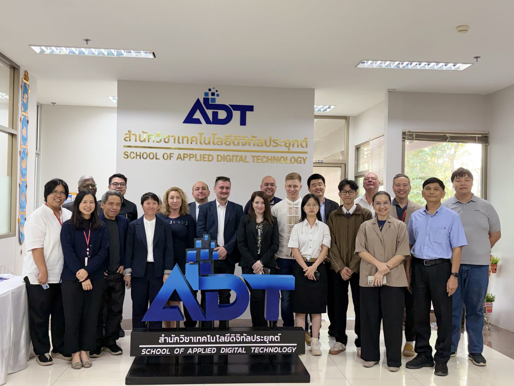
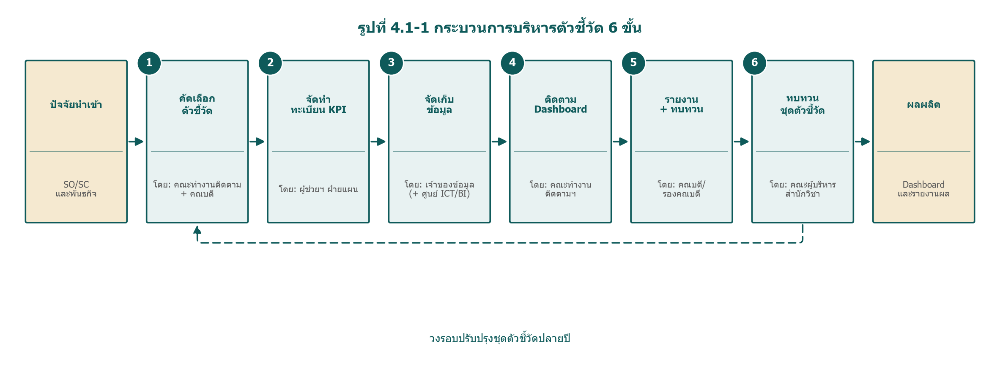
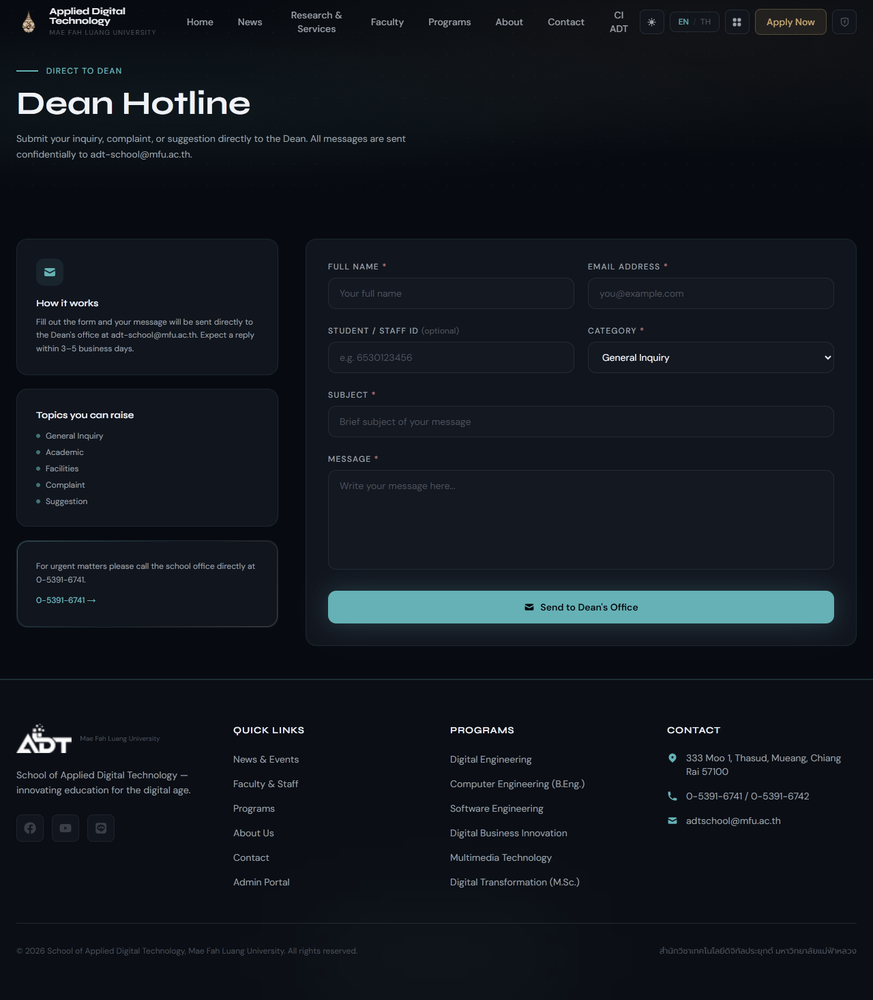
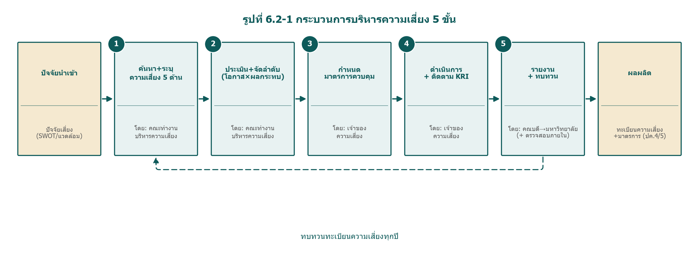
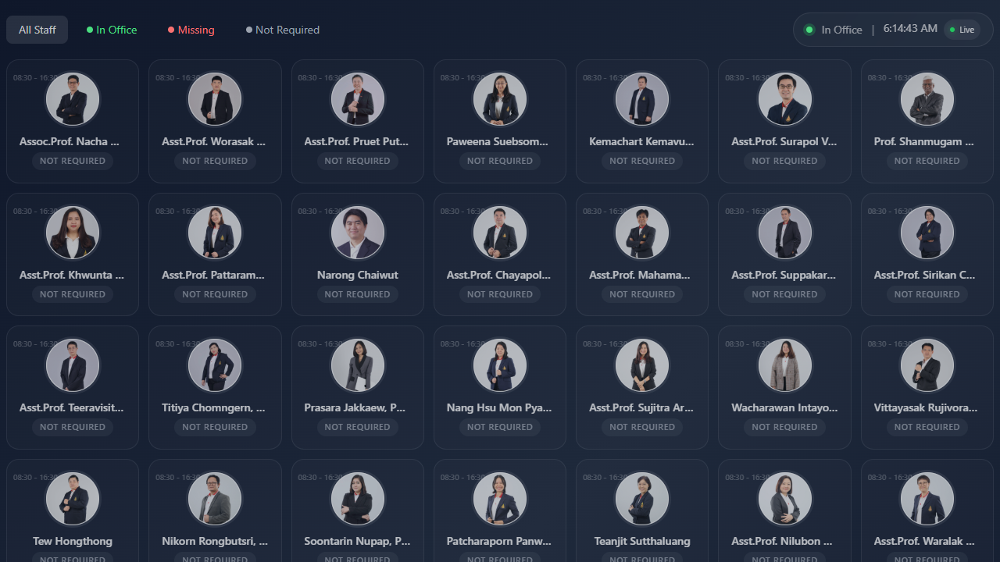
| ช่องทาง | มาตรฐาน | ผล 2568 |
|---|---|---|
| สายตรงคณบดี (ไม่ระบุตัวตนได้) | ตอบ 3–5 วันทำการ | 1 กรณี แก้ไขในกำหนด |
| ประชุม/สัมมนาสำนักวิชา (Town Hall) | ภาคละครั้ง | 38 · 40 · 43 คน |
| ข่าวเว็บ + Facebook | ≤24 ชม. | ~20 ข่าว · เข้าถึง 664,124 |
| Alumni Meetup | ปีละครั้ง | 120+ คน |
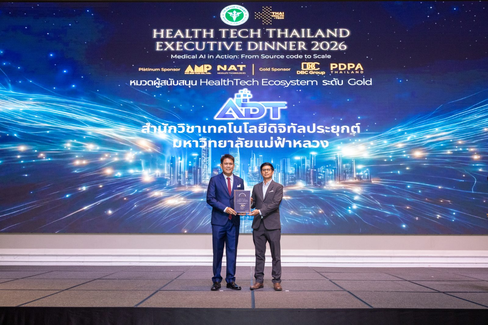
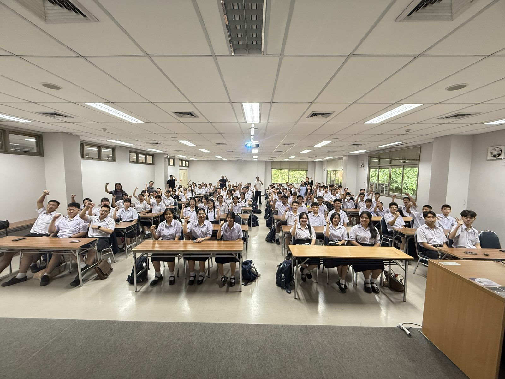
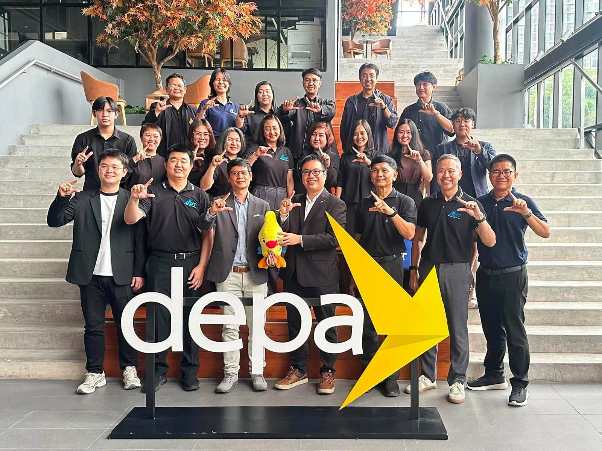
| ด้าน | บาท | % |
|---|---|---|
| แผนระดับสำนักวิชา | 404,000 | 28.1 |
| วิจัย (สูงสุด · SO1/SO2) | 252,000 | 17.5 |
| บริการวิชาการ (SO6) | 175,000 | 12.2 |
| กิจกรรมนักศึกษา (SO3) | 130,000 | 9.0 |
| วิเทศสัมพันธ์ (SO4/SO7) | 119,000 | 8.3 |
| ประชาสัมพันธ์ (SC7) | 80,000 | 5.6 |
| หลักสูตร 6 หลักสูตร | 280,000 | 19.4 |
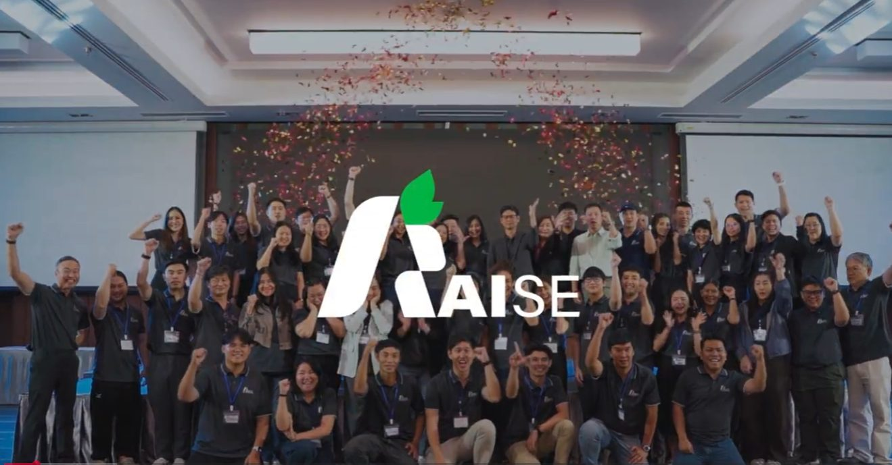
| ช่องทาง | กลุ่มลูกค้า | มาตรฐาน |
|---|---|---|
| เว็บ adt.mfu.ac.th (revamp เม.ย. 69) | ผู้เรียน · ผู้สมัคร · คู่ความร่วมมือ | ข้อมูลหลักสูตร ≤3 คลิก |
| สายตรงคณบดี | ทุกกลุ่ม (ไม่ระบุตัวตนได้) | ตอบ 3–5 วันทำการ |
| Facebook / YouTube | ผู้เรียน · ศิษย์เก่า · สาธารณะ | ตอบ ≤24 ชม. |
| อาจารย์ที่ปรึกษา | นักศึกษาทุกหลักสูตร | พบ ≥1 ครั้ง/ภาค |
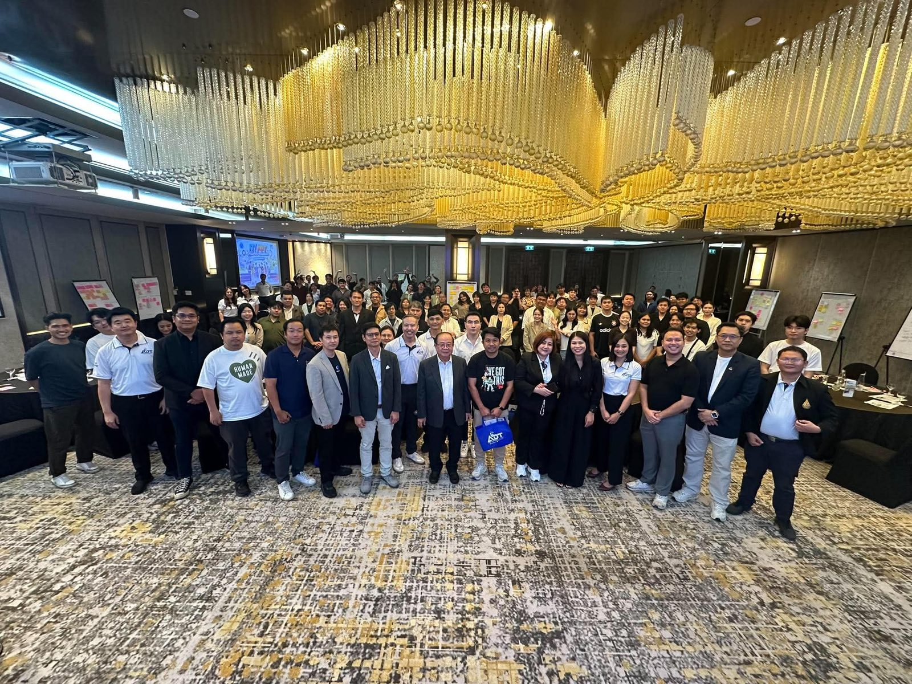
| ตัวชี้วัด | 2567 | 2568 | สถานะ |
|---|---|---|---|
| ผู้ใช้บัณฑิต (ตอบกลับ 21.53% สูงกว่าค่าเฉลี่ย มฟล.) | 4.37 | 4.37 | เหนือเป้า |
| ผู้รับบริการวิชาการ | — | 4.52 | เหนือเป้า |
| การจัดการข้อร้องเรียน | — | 4.25 | เหนือเป้า |
| ห้องปฏิบัติการ | 3.47 | 3.85 | ฟื้นตัว |
| อาจารย์ที่ปรึกษา (ให้คำปรึกษา / ให้ข้อมูล) | 3.92 | 3.72 / 3.56 | ต่ำกว่าเป้า |
| หลักสูตรและการเรียนการสอน · งานบริการสำนักวิชา | — | 3.61 · 3.72 | ต่ำกว่าเป้า |
| การสื่อสารองค์กร · วิธีรับฟังเสียงลูกค้า | 3.64 | 3.56 · 3.43 | ต่ำกว่าเป้า |
| ระดับ | แหล่ง | ใช้เทียบ |
|---|---|---|
| ภายใน มฟล. | ระบบ BI มฟล. — 15 สำนักวิชา | Exit Exam · ภาวะมีงานทำ · Scopus · เบิกจ่าย · อัตรากำลัง |
| เครือข่ายวิชาชีพ | AUN Benchmark คณะไอที 12 สถาบัน | EdPEx ระดับสำนักวิชา — ป้อนข้อมูลปีแรก |
| ภายนอก/สากล | Scopus/SciVal · OpenAlex · สป.อว. · THE | ผลงานตีพิมพ์ CS เทียบ 7 สถาบัน |
| ตัวชี้วัด (ตาราง 7.3-1) | 2566 | 2567 | 2568 | เป้า | สถานะ |
|---|---|---|---|---|---|
| อัตราคงอยู่ (%) | 97.37 | 100 | 100 | 90 | เหนือเป้า |
| ลาออกในปีแรก (%) | 0 | 0 | 0 | 0 | บรรลุ |
| ตำแหน่งวิชาการ (%) | 37.50 | 53.65 | 57.89 | 35 | เหนือเป้า |
| อาจารย์ ป.เอก (%) | 79.49 | 76.92 | 78.94 | 78 | บรรลุ |
| พึงพอใจสภาพแวดล้อม / เพื่อนร่วมงาน / สิ่งสนับสนุน | — | — | 4.07 / 4.52 / 4.00 | 4 | บรรลุ |
| พัฒนาสมรรถนะ สายวิชาการ / สนับสนุน (%) | — | — | 70.27 / 27.27 | 75 | ต่ำกว่าเป้า |
| PSF/UKPSF สะสม (คน) | — | — | 2 | 19 | ต่ำกว่าเป้า |
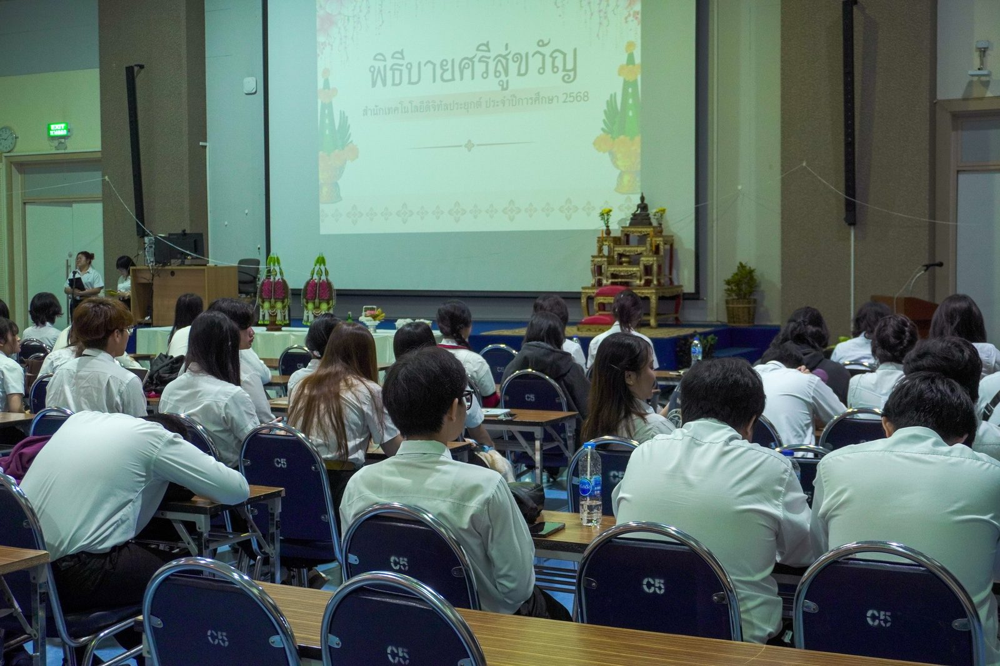
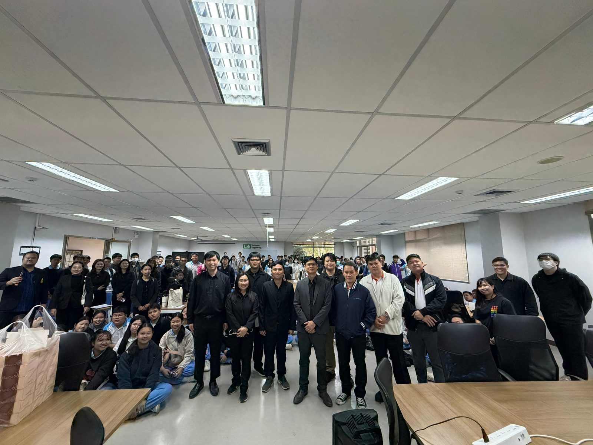
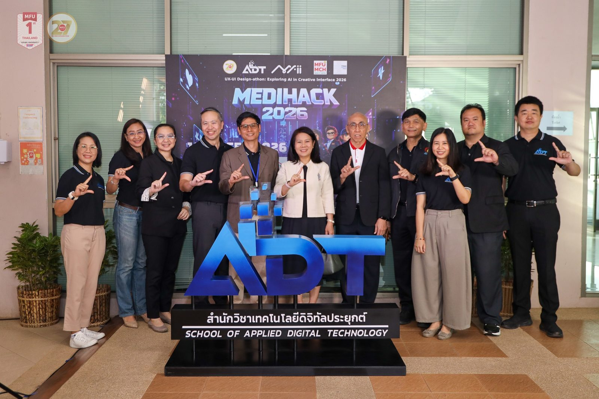
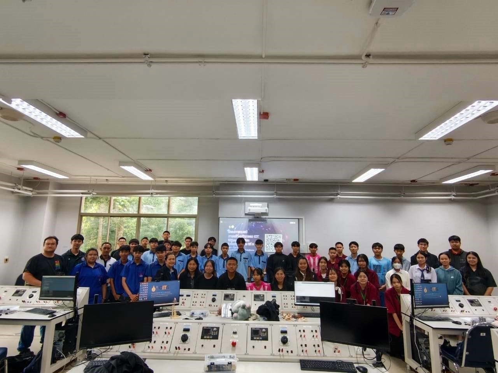
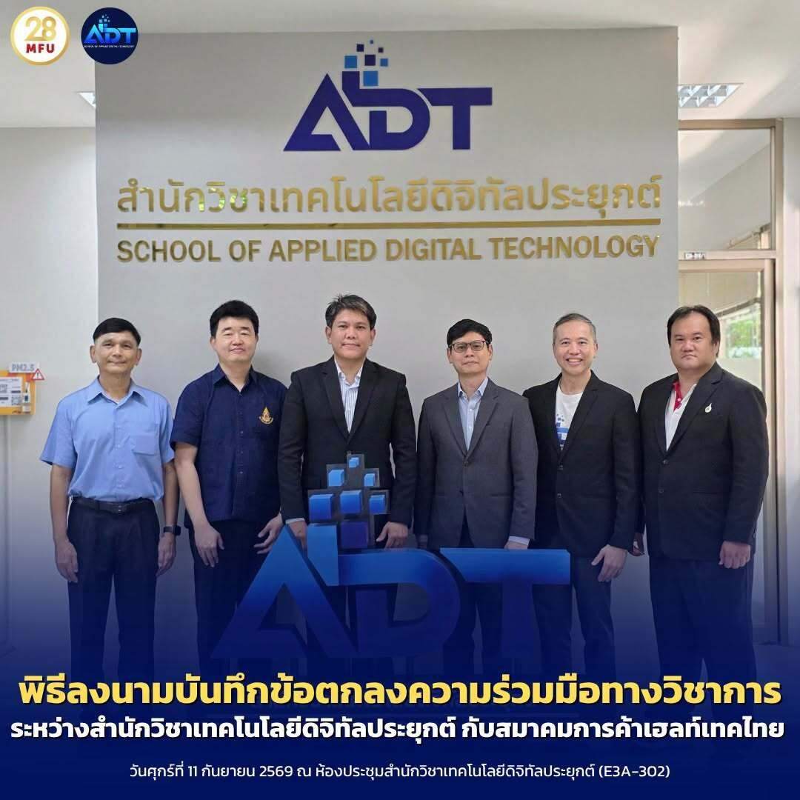
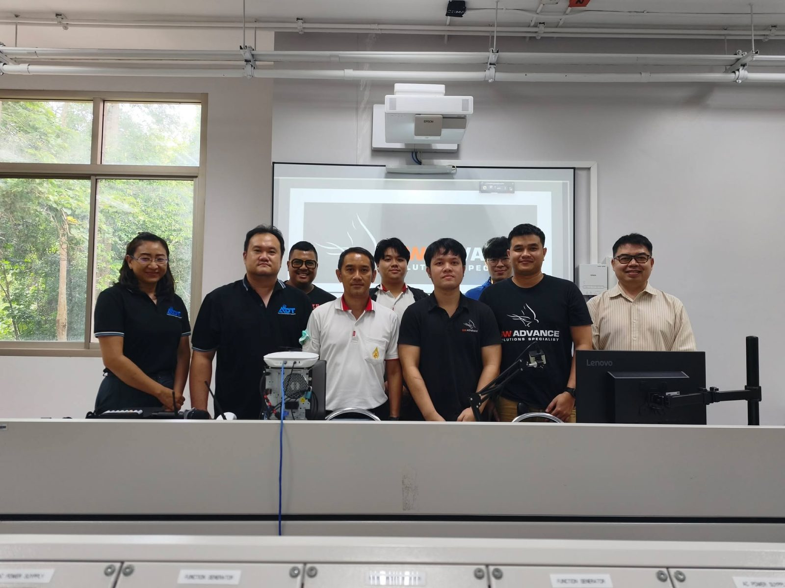
| วิชา | ผู้สอบ | %S | คู่เทียบ |
|---|---|---|---|
| ภาษาอังกฤษ (ENG) | 169 | 14.2 | มฟล. 35.8 |
| IT | 24 | 62.5 | — |
| GE | 148 | 39.2 | — |
| MAJOR (รายสาขา 47–100) | 82 | 61.0 | — |
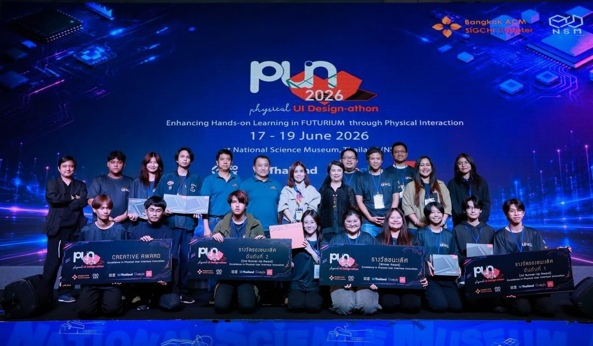
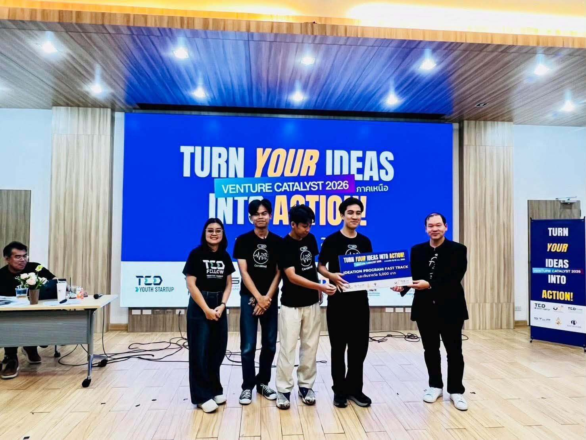
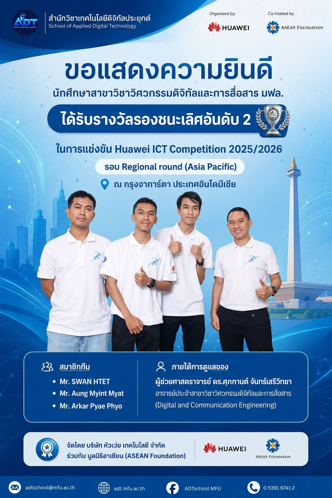
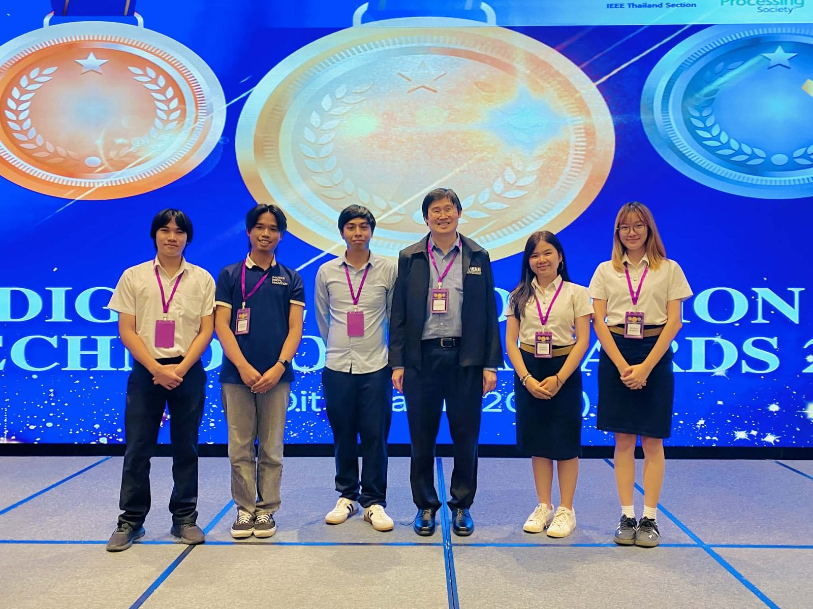
| ตัวชี้วัด | 2568 | ตัวชี้วัด | 2568 |
|---|---|---|---|
| ความเชื่อมั่นต่อผู้นำ | 4.38 | ผิดจรรยาบรรณ (บุคลากร) | 0% |
| การสื่อสารภายใน | 4.38 | ร้องเรียนจริยธรรม 3 กลุ่ม | 0 / 0 / 0 |
| รับรู้วิสัยทัศน์ / TEAM | 4.23 / 4.15 | ทักท้วงตรวจสอบภายใน / สตง. | 1 / 0 |
| ระบบกำกับดูแล / ผู้บริหาร | 4.54 / 4.54 | Town Hall (คน) | 38 · 40 · 43 |
| คำรับรองคณบดี 2567 | 14/24 · #6/15 | บริการวิชาการ (รายการ / ผู้รับ) | 5 / >310 |
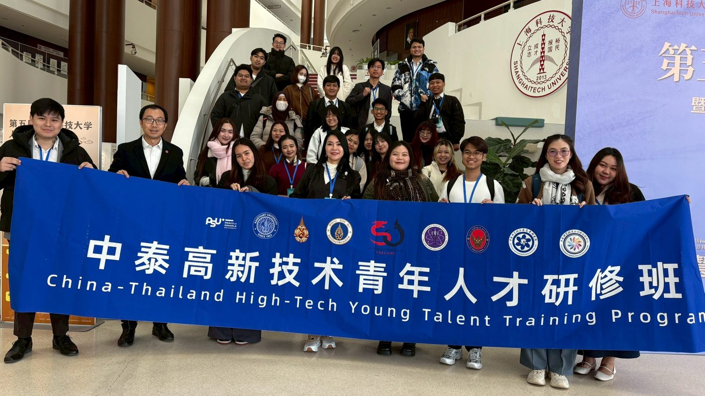
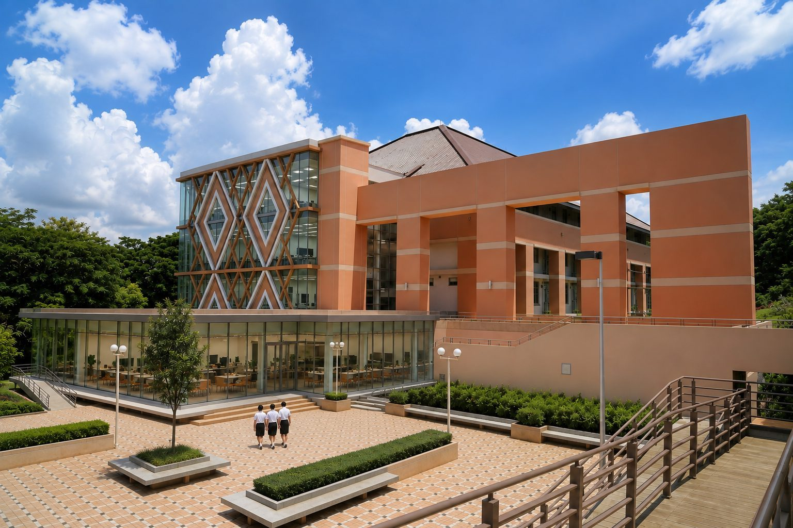
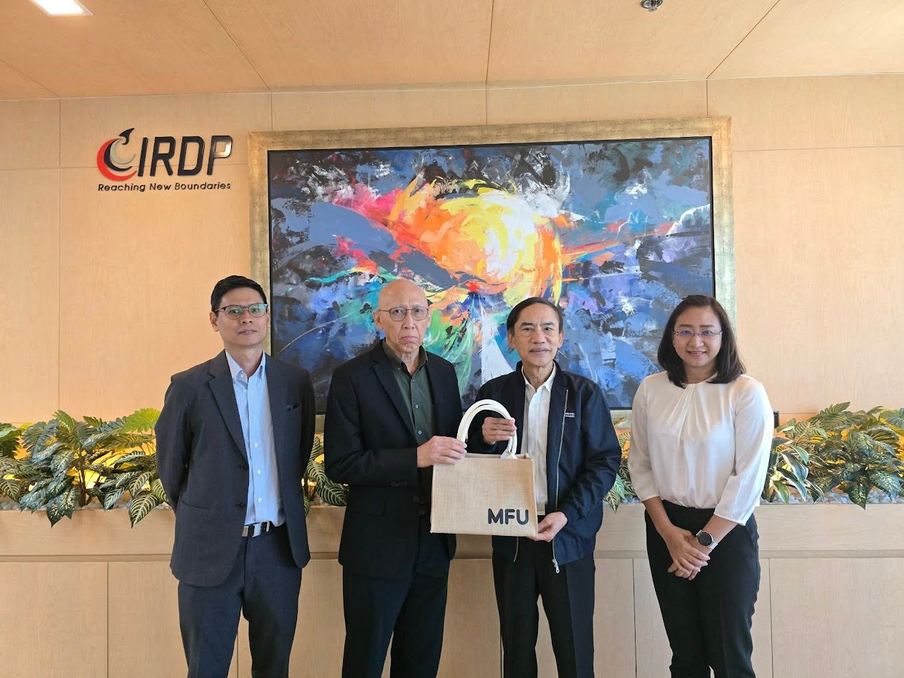
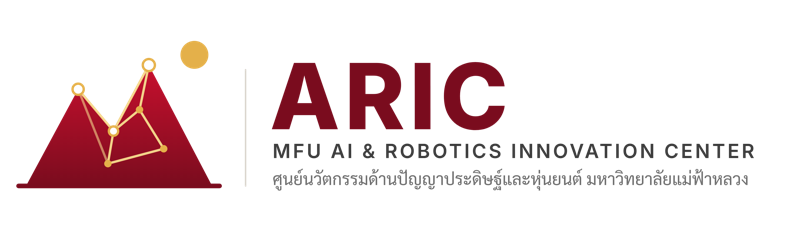
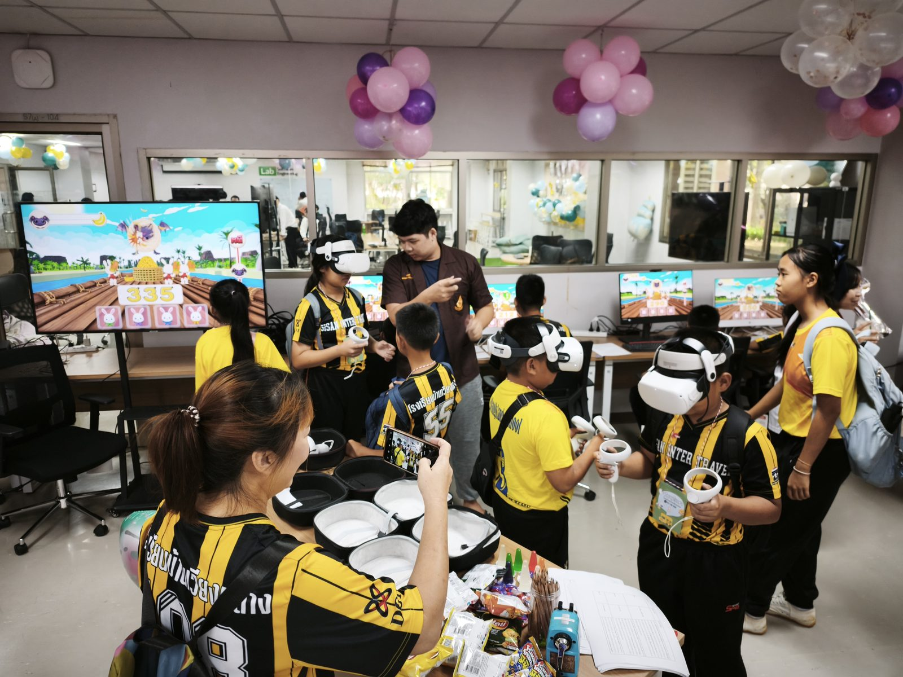
| ตัวชี้วัด | ผล / เป้า | มาตรการ · ผู้รับผิดชอบ |
|---|---|---|
| ภาวะมีงานทำ 1 ปี | 64.48 / 70 | 7 โครงการทักษะตลาดแรงงาน · คณะทำงานกิจการ นศ. |
| สำเร็จตามแผน ป.ตรี | 43.97 / 70 | ติดตามรายภาค + ที่ปรึกษา ≥1 ครั้ง/ภาค · ประธานหลักสูตร |
| Exit Exam ENG (%S) | 14.2 / 60 | EMI ทุกหลักสูตร + ติวเข้ม · คณะทำงานวิชาการ |
| PSF/UKPSF สะสม | 2 / 19 | ยื่นเป็นรุ่น ผูก e-Portfolio · รองคณบดี |
| Scopus ต่ออาจารย์ | 0.58 / 1.5 | ทุนภายใน 1.56 ลบ. + ค่าตอบแทนตีพิมพ์ · คณะทำงานวิจัย |
| MoU active / Inbound | 40% / 2.0% | ทบทวน MoU ทุกฉบับ + Erasmus+ KA171 · วิเทศสัมพันธ์ |
| ความพึงพอใจผู้เรียน 6 รายการ | 3.43–3.85 / 4 | แบบสำรวจฉบับใหม่ + PR เลขที่ 20 · คณะทำงาน PR |